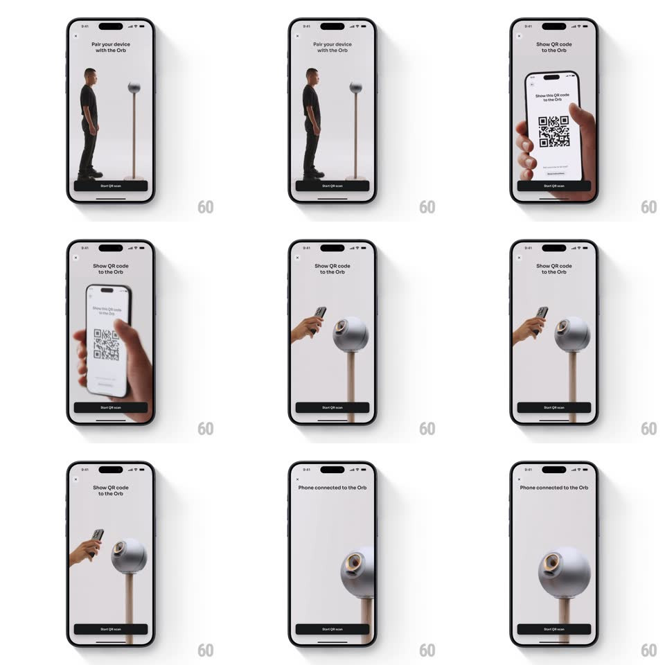

Media
Frame-by-frame

Rebuild this interaction 1:1: World App's Orb pairing onboarding - a step-by-step photographic sequence ("Pair your device with the Orb", "Show QR code to the Orb", "Phone connected to the Orb") with smooth cross-dissolve steps and a pinned Start QR scan button.

Rebuild this interaction 1:1: World App's Orb pairing onboarding - a step-by-step photographic sequence ("Pair your device with the Orb", "Show QR code to the Orb", "Phone connected to the Orb") with smooth cross-dissolve steps and a pinned Start QR scan button.
## Integration
Integration: stack-agnostic spec - springs given as stiffness/damping, timed motions as duration + curve; map every value to your framework and animation library of choice.
## Scene
Full-bleed photographic steps on a light backdrop: step 1 a person standing beside the Orb device on its stand ("Pair your device with the Orb"); step 2 a hand holding a phone showing a QR code up to the Orb's lens ("Show QR code to the Orb"); step 3 an Orb close-up with its ring glowing ("Phone connected to the Orb"). X close top-left, a black pill button ("Start QR scan") pinned at the bottom across steps.
## Motion spec
Pattern: guided step dissolves.
- Each step cross-dissolves to the next (500ms): the outgoing photo fades as the incoming fades in, with a slight scale drift (1.02 -> 1 on the incoming) so the transition breathes.
- The step title crossfades with a small upward slide (250ms), timed to land mid-dissolve.
- Between step 2 and 3 (the actual scan), show a scanning state: the Orb's ring sweeps a light arc around its lens (rotation, 1s loop) until the connection resolves.
- Success: the title swaps to "Phone connected to the Orb", the ring flashes once (scale 1 -> 1.1 -> 1, 250ms), and the bottom button morphs its label to continue.
- The pinned button never moves during step transitions - only its label crossfades.
## Calibration
- Photos are real and warm; transitions stay slow so the flow feels calm, not wizard-like.
- The dissolve keeps faces/hands from jumping - align the focal subject across step images.
## Reduced motion
Steps crossfade without scale drift; ring sweep replaced by a static glow.
## Don't miss
- The X close stays fixed top-left through every step.
- The QR on the phone screen in step 2 is crisp - it's instructional, not decoration.